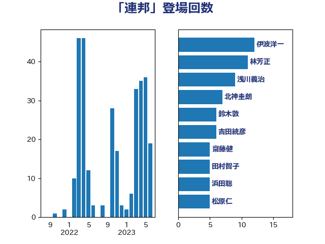

単語「連邦」

| 伊波洋一 | 無所属 | 10 回 |
| 田村智子 | 日本共産党 | 8 回 |
| 林芳正 | 自由民主党 | 7 回 |
| 吉田統彦 | 立憲民主党 | 5 回 |
| 茂木敏充 | 自由民主党 | 5 回 |
| 櫻井周 | 立憲民主党 | 4 回 |
| 浜田聡 | NHK党 | 4 回 |
| 井上哲士 | 日本共産党 | 3 回 |
| 勝部賢志 | 立憲民主党 | 3 回 |
| 山本剛正 | 日本維新の会 | 3 回 |
| 熊谷裕人 | 立憲民主党 | 3 回 |
| 鈴木敦 | 国民民主党 | 3 回 |
| 伊東信久 | 日本維新の会 | 2 回 |
| 吉田忠智 | 立憲民主党 | 2 回 |
| 太栄志 | 立憲民主党 | 2 回 |
| 奥野総一郎 | 立憲民主党 | 2 回 |
| 山下芳生 | 日本共産党 | 2 回 |
| 梶山弘志 | 自由民主党 | 2 回 |
| 野田聖子 | 自由民主党 | 2 回 |
| 鈴木庸介 | 立憲民主党 | 2 回 |
| 青柳仁士 | 日本維新の会 | 2 回 |
| ながえ孝子 | 無所属 | 1 回 |
| 上野通子 | 自由民主党 | 1 回 |
| 世耕弘成 | 自由民主党 | 1 回 |
| 中島克仁 | 立憲民主党 | 1 回 |
| 中川宏昌 | 公明党 | 1 回 |
| 中西祐介 | 自由民主党 | 1 回 |
| 伊藤孝恵 | 国民民主党 | 1 回 |
| 加藤鮎子 | 自由民主党 | 1 回 |
| 北神圭朗 | 無所属 | 1 回 |
| 城内実 | 自由民主党 | 1 回 |
| 大塚耕平 | 国民民主党 | 1 回 |
| 大西健介 | 立憲民主党 | 1 回 |
| 寺田静 | 無所属 | 1 回 |
| 小熊慎司 | 立憲民主党 | 1 回 |
| 小西洋之 | 立憲民主党 | 1 回 |
| 山口俊一 | 自由民主党 | 1 回 |
| 山田宏 | 自由民主党 | 1 回 |
| 平山佐知子 | 無所属 | 1 回 |
| 後藤茂之 | 自由民主党 | 1 回 |
| 徳永久志 | 立憲民主党 | 1 回 |
| 新妻秀規 | 公明党 | 1 回 |
| 末松信介 | 自由民主党 | 1 回 |
| 松原仁 | 立憲民主党 | 1 回 |
| 森まさこ | 自由民主党 | 1 回 |
| 武見敬三 | 自由民主党 | 1 回 |
| 泉健太 | 立憲民主党 | 1 回 |
| 津島淳 | 自由民主党 | 1 回 |
| 浅野哲 | 国民民主党 | 1 回 |
| 渡辺周 | 立憲民主党 | 1 回 |
| 渡辺猛之 | 自由民主党 | 1 回 |
| 田島麻衣子 | 立憲民主党 | 1 回 |
| 田村まみ | 国民民主党 | 1 回 |
| 田村貴昭 | 日本共産党 | 1 回 |
| 矢倉克夫 | 公明党 | 1 回 |
| 秋野公造 | 公明党 | 1 回 |
| 笠井亮 | 日本共産党 | 1 回 |
| 篠原孝 | 立憲民主党 | 1 回 |
| 細田健一 | 自由民主党 | 1 回 |
| 細田博之 | 自由民主党 | 1 回 |
| 美延映夫 | 日本維新の会 | 1 回 |
| 芳賀道也 | 国民民主党 | 1 回 |
| 赤嶺政賢 | 日本共産党 | 1 回 |
| 足立康史 | 日本維新の会 | 1 回 |
| 野上浩太郎 | 自由民主党 | 1 回 |
| 野間健 | 立憲民主党 | 1 回 |
| 鈴木宗男 | 日本維新の会 | 1 回 |
| 阿部知子 | 立憲民主党 | 1 回 |
| 青山大人 | 立憲民主党 | 1 回 |
| 鬼木誠 | 立憲民主党 | 1 回 |
| 麻生太郎 | 自由民主党 | 1 回 |